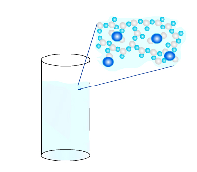

Carbonated water is simply water (H2O) that has carbon dioxide dissolved throughout. Types of carbonated water include sparkling water and seltzer.
What is soda? Sodas (which some people call "pop") are made from carbonated water, but also contain flavors and sweeteners (e.g., sugars; aspartame). One 2 liter bottle of soda includes about 10 grams of CO2. This (10 g) might not sound like a lot. But what is the volume of 10 g of CO2?
To find out the volume of 10 g of CO2, we can use the formula for density:
At standard temperature (0°C) and standard pressure (1 atmosphere, which is air pressure at sea level), the density of CO2 is 0.002 grams/mL.
So,
This means that there are about 5 liters of CO2 (at standard temperature and pressure) squeezed into and trapped in a bottle of soda! (Sounds crazy, right!?) The volume of CO2 decreases as it cools and is pressurized, though, which is why it's able to fit in a bottle.
How to make carbonated water. As you may know, if you fill a glass with pure water and set it on a table, the water does not get carbonated on its own. This is because at temperatures around room temperature (about 22°C/71°F), CO2 molecules that make up the air are moving around fast. Even though H2O molecules have positive and negative charges, CO2 molecules are moving fast and have enough kinetic energy to not get "caught" by these electric charges. So, CO2 molecules stay in the air. Even if a CO2 molecule happens to break through the surface of the water, it will not stay in the water for long. It will go back into the atmosphere.
In order to carbonate water, it is necessary to reduce the motion of CO2 and H2O molecules. In other words, it is necessary to reduce the temperatures of the gas and water. This will allow the H2O molecules to hold CO2 in the liquid.
You can even make carbonated water at home (if you have the right equipment, including a tank with high-pressure CO2 in it!):
The CO2 molecules are now trapped in the water. Because the water is cooler (and H2O molecules are moving more slowly), the water is a bit more dense and the bonds between H2O molecules are also a bit stronger. The CO2 molecules themselves also have less kinetic energy, or energy due to motion. So, they are less able to break through the (stronger) bonds between H2O molecules and leave the liquid.
As shown in the picture above, H2O molecules form spheres around CO2 molecules (carbon atoms in the CO2 are represented as larger and darker blue spheres and oxygen atoms as white spheres). This bonding of H2O molecules to other H2O molecules helps to hold the CO2 molecules in the liquid.
Another reason that CO2 remains dissolved in the water is that there is air at the top of the bottle. This is high-pressured CO2, where there are a lot of CO2 molecules per volume. This high-pressure gas pushes down on the surface of the liquid. This pressure also helps prevent CO2 molecules in the liquid from leaving the liquid.
When you open a bottle of soda, you'll hear a "whooshing" sound. That's the sound of the high-pressure air leaving the bottle. You probably also noticed that some of the soda may bubble up (and out of the bottle, if you're not careful). This is from some of the CO2 in the soda leaving the soda. Since there is now less air pressure at the surface of the soda, it's easier for the trapped CO2 near the surface to escape from the soda.
If you leave an open bottle of soda sitting around (with no cap on it), eventually it will lose all of its carbonation. (It also does not taste very good.) As the soda's temperature increases, the H2O molecules begin moving faster and the bonds between H2O molecules weaken. The CO2 molecules also start moving around faster, enabling them to break through the H2O bonds. These factors allow CO2 to eventually escape from the soda.
Soda "Explosion." As we discussed at the beginning of this unit, a 2 liter bottle of soda has about 5 liters of CO2 (at room temperature) trapped in it. This is 2.5 times its volume! When the water temperature is low, the water molecules help to hold the CO2 molecules in the water by H2O-H2O bonds. But when enough these bonds are broken, the CO2 molecules can "break free" from within the water and cause the soda to "explode." This may happen when you shake a bottle of soda before opening it. The motion of shaking the soda may help break H2O-H2O bonds and allow the CO2 molecules to escape from the water.
If enough CO2 is able to escape (remember, there is a LOT of CO2 in the water: around 5 liters!), it can push a lot of the liquid soda out of the bottle and cause a big "explosion" or "geyser."
One cause of CO2 exploding from a bottle of soda is "nucleation", where bubbles form on tiny bumps on surfaces (see Nucleation unit for more information).


***Note for Teachers: You can access more information about this website and find other resources for science inquiry on the ISP Tutor website.
©2021 Klahr Lab, Carnegie Mellon University. All Rights Reserved
Carnegie Mellon University | Dept. of Psychology | 5000 Forbes Ave. | Pittsburgh, PA 15213 The TED project was funded in part by the Institute of Education Science (IES), Grant R305H060034, and in part by the National Science Foundation, Grant SBE035442. The ISP Tutor project is funded by IES, Grant R305A170176.
The research reported here was supported by the Institute of Education Sciences, U.S. Department of Education, through Grant R305A170176 to Carnegie Mellon University. The opinions expressed are those of the authors and do not represent views of the Institute or the U.S. Department of Education.